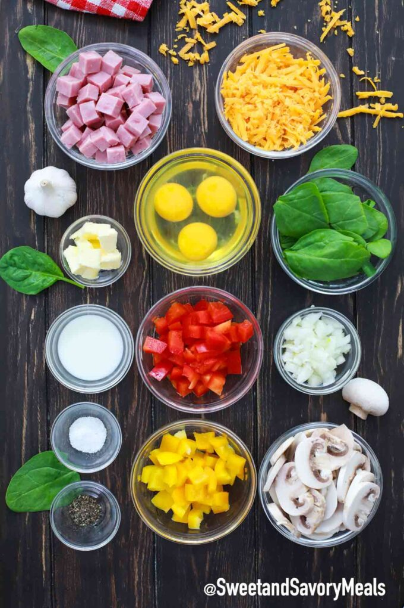

Recipe Of Omelette:
Ingredients:
- Avocado and cheddar
- Roasted potatoes and Gruyere
- Leftover ratatouille or other vegetable stew, alone or with a little Parmesan
- Bacon and cheese, or bacon and potatoes without cheese, chives
- Spinach and tomato, with or without feta
- Goat cheese and herbs

Method:
- .Beat the eggs:
- Use two or three eggs per omelette, depending on how
hungry you are. Beat the eggs lightly with a fork.
- .Melt the butter:
- Use an 8-inch nonstick skillet for a 2-egg omelette, a
9-inch skillet for 3 eggs. Melt the butter over medium-low heat, and
keep the temperature low and slow when cooking the eggs so the
bottom does not get too brown or overcooked.
- .Add the eggs:
- Let the eggs sit for a minute, then use a heatproof
silicone spatula to gently lift the cooked eggs from the edges of the
pan. Tilt the pan to allow the uncooked eggs to flow to the edge of the
pan.
- .Fill the omelette:
- Add the filling—but do not overstuff the omelette
when the eggs begin to set. Cook for a few more seconds
- .Fold and serve:
- Fold the omelette in half. Slide it onto a plate with the
help of a silicone spatula.